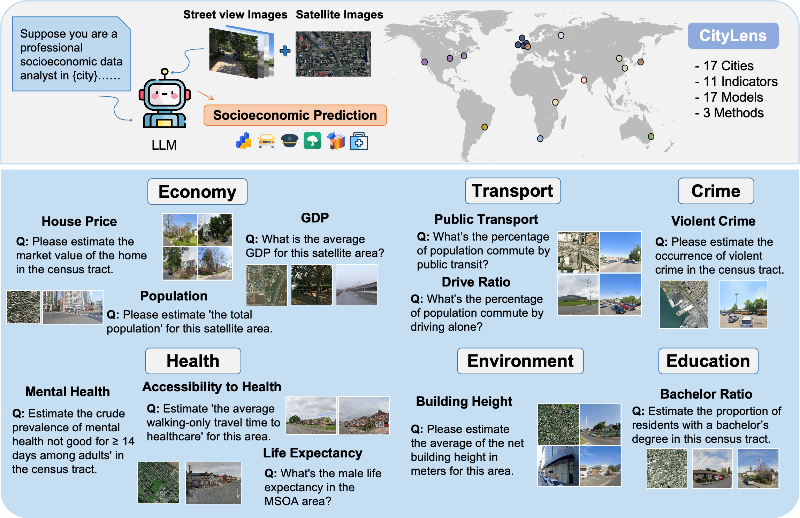
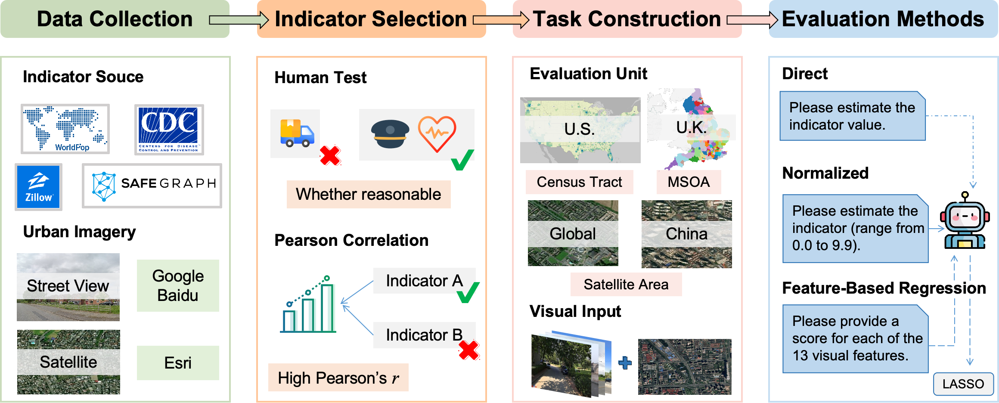
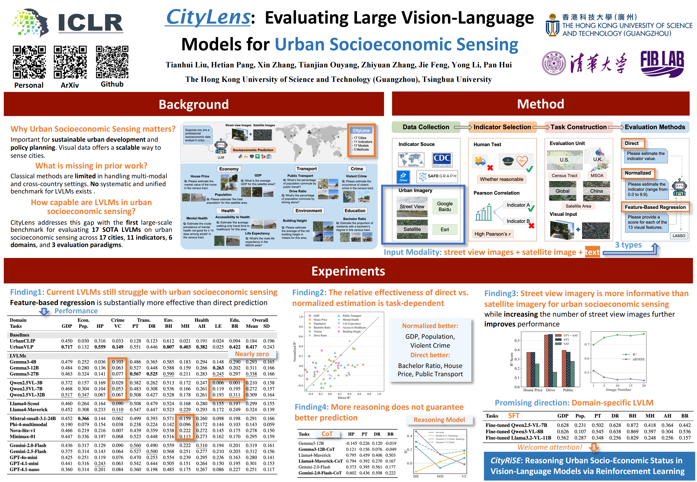

Including cities across North America, Europe, Asia, Africa, South America, and Oceania.
CityLens: Evaluating Large Vision-Language Models
for Urban Socioeconomic Sensing
1 Information Hub, The Hong Kong University of Science and Technology (Guangzhou) 2 Department of Electronic Engineering, BNRist, Tsinghua University 3 School of Electronic and Information Engineering, Beijing Jiaotong University 4 Zhongguancun Academy
† Corresponding authors
- 17
- Cities
- 11
- Indicators
- 6
- Domains
- 17
- LVLMs
Abstract
Understanding urban socioeconomic conditions through visual data is a challenging yet essential task for sustainable urban development and policy planning. In this work, we introduce CityLens, a comprehensive benchmark designed to evaluate the capabilities of Large Vision-Language Models in predicting socioeconomic indicators from satellite and street view imagery. We construct a multi-modal dataset covering a total of 17 globally distributed cities, spanning 6 key domains: economy, education, crime, transport, health, and environment, reflecting the multifaceted nature of urban life. Based on this dataset, we define 11 prediction tasks and utilize 3 evaluation paradigms: Direct Metric Prediction, Normalized Metric Estimation, and Feature-Based Regression. We benchmark 17 state-of-the-art LVLMs across these tasks. Together, these characteristics make CityLens the most extensive socioeconomic benchmark to date in terms of geographic coverage, indicator diversity, and model scale. Our results reveal that while LVLMs demonstrate promising perceptual and reasoning capabilities, they still exhibit limitations in predicting urban socioeconomic indicators. CityLens provides a unified framework for diagnosing these limitations and guiding future efforts in using LVLMs to understand and predict urban socioeconomic patterns. The code and data are available online.
Benchmark
CityLens benchmark overview
CityLens pairs each evaluation region with one satellite image, ten street view images, and scalar labels for 11 socioeconomic indicators across 17 globally distributed cities. The benchmark spans economy, education, crime, transport, health, and environment, with geographic units aligned to satellite areas, census tracts, or MSOAs.
Economy, education, crime, transport, health, and environment.
GDP, population, house price, public transport, drive ratio, mental health, and more.
Open and proprietary systems are evaluated under the same task definitions.

Indicators
Eleven prediction tasks across six urban domains.
GDP
Population
House Price
Public Transport
Drive Ratio
Mental Health
Accessibility to Healthcare
Life Expectancy
Bachelor Ratio
Violent Crime
Building Height
Evaluation Paradigms
Three evaluation paradigms for socioeconomic prediction
CityLens evaluates direct numeric prediction, normalized score estimation, and feature-based regression so that perceptual grounding, relative ranking, and numeric calibration can be compared under a unified benchmark.

Direct Metric Prediction
The model receives urban imagery and directly outputs a specific socioeconomic value, such as the public transit ratio or average house price for a region.
Normalized Metric Estimation
The target is converted to a 0.0 to 9.9 scale, emphasizing relative ordering and reducing the burden of absolute value calibration.
Feature-Based Regression
LVLMs score structured visual features, then a regression model maps those features to socioeconomic indicators, turning the LVLM into a visual feature enhancer.
Poster
Conference poster
The full-resolution CityLens poster is available below for quick overview and conference use.

Results
Selected result figures from the paper
Browse the main result figures, including task-level comparisons, modality ablations, city-level variation, and representative qualitative cases.
Put the figures you want to browse into
assets/images/, then add them to assets/figures.js.
Findings
What CityLens reveals about current LVLMs
Across 17 models, 11 tasks, and 3 evaluation paradigms, CityLens shows that current LVLMs can extract useful urban signals, but their performance remains highly dependent on indicator type, data coverage, and prediction strategy.
Visually grounded indicators are easier to predict.
Building Height, Public Transport, and GDP achieve stronger performance because their targets are more directly reflected in skyline structure, infrastructure visibility, and urban morphology.
Latent social outcomes remain challenging.
Mental Health, Life Expectancy, and Bachelor Ratio remain difficult because they depend on social and health processes that are only weakly observable from imagery.
Street view imagery carries the strongest predictive signal.
Street view imagery alone performs comparably to using both modalities and clearly outperforms satellite-only input, while adding more street views consistently improves prediction quality.
Performance varies across cities and paradigms.
Results differ substantially across cities, and no single evaluation paradigm is best for every task. CityLens makes these geographic and methodological differences visible instead of hiding them behind a single average score.
Citation
Cite CityLens
Tianhui Liu, Hetian Pang, Xin Zhang, Tianjian Ouyang, Zhiyuan Zhang, Jie Feng, Yong Li, and Pan Hui. CityLens: Evaluating Large Vision-Language Models for Urban Socioeconomic Sensing. International Conference on Learning Representations, 2026.
@inproceedings{liu2026citylens,
title={CityLens: Evaluating Large Vision-Language Models for Urban Socioeconomic Sensing},
author={Liu, Tianhui and Pang, Hetian and Zhang, Xin and Ouyang, Tianjian and Zhang, Zhiyuan and Feng, Jie and Li, Yong and Hui, Pan},
booktitle={International Conference on Learning Representations},
year={2026}
}